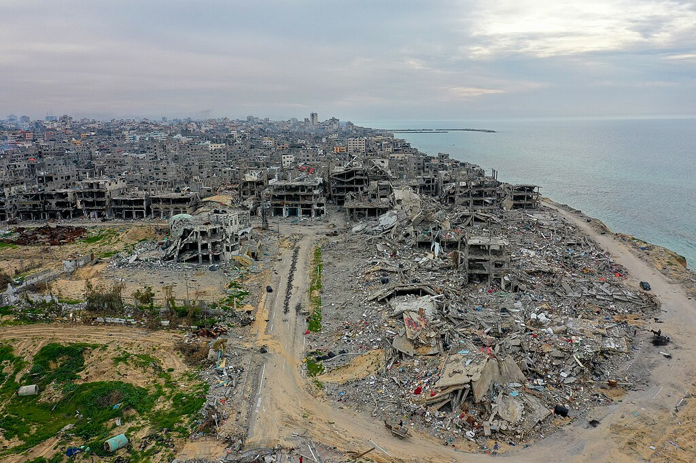

На фоне перемирия израильский удар дроном убил одного и ранил семерых в Газе
Пресс-офис правительства Газы сообщает о 4 379 нарушениях перемирия; перемирие вступило в силу в октябре 2025 года.

Хотя в Газе действует перемирие, 27 сентября израильские удары привели к жертвам. В районе Аль-Маваси возле Хан-Юниса на юге Газы, по сообщениям, удар дрона убил 28-летнего Удая Адли аль-Ассара.
Итог дня
По данным Anadolu, в тот день в разных районах ранены в общей сложности семь человек: один тяжело в лагере беженцев Аль-Шати и пятеро возле рынка Шейх-Радван на севере города Газа. Middle East Eye и Wafa сообщили о трёх (Wafa: двое, один тяжело) раненых в инциденте в Аль-Шати.
Как нарушается перемирие
Пресс-офис правительства Газы сообщает, что с 10 октября 2025 по 24 августа 2026 года перемирие нарушалось 4 379 раз. Представители здравоохранения территории приводили данные о более чем 1 300 погибших палестинцах с момента вступления перемирия в силу.
Общая картина
С октября 2023 года в Газе, по сообщениям, погибли около 74 000 человек и более 175 000 ранены. Перемирие при посредничестве США вступило в силу 10 октября 2025 года; такие условия, как разоружение ХАМАС и полный вывод израильских войск, остаются нерешёнными.
Кратко
- Где: юг Газы (Аль-Маваси, Хан-Юнис) и город Газа
- 27 сент.: 1 погибший (Удай Адли аль-Ассар, 28), 7 раненых
- Нарушения перемирия: 4 379 (окт. 2025 – авг. 2026)
- Перемирие: действует с 10 октября 2025 года
По материалам Anadolu, Middle East Eye и Wafa; источники немного расходятся в оценке масштаба инцидента.